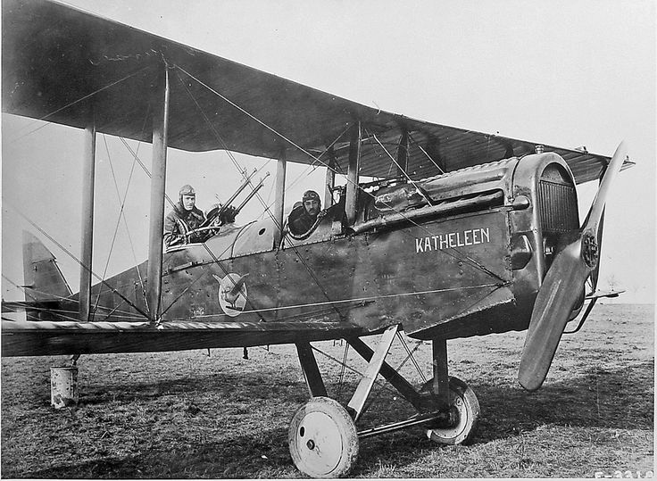

Flexbox - это гибкая технология для позиционирования элементов в CSS
какое-то описание этого самолета Antonov An-4 (another designation: An-2 W) was a Soviet seaplane from the Cold War period. The machine was designed in a biplane system with a fixed float undercarriage. The plane was flown in 1949. The drive was provided by a single 1000 HP Shvetsov Asz-62 engine. The machine was 12.75 meters long with a wingspan of 18.9 meters. The An-4 aircraft was developed in the design office of Oleg Antonov as an evolutionary development of the successful An-2 aircraft, being in fact its development version. The main difference between the two planes was the use of the 6 m3 float landing gear by the An-4. However, features such as the drive unit, overall structure and aerodynamics remained virtually unchanged. Machines of this type were produced on a small scale at the plants in Kiev. It is worth adding that the designation An-4 was also used to identify the An-277 meteorological reconnaissance aircraft.
